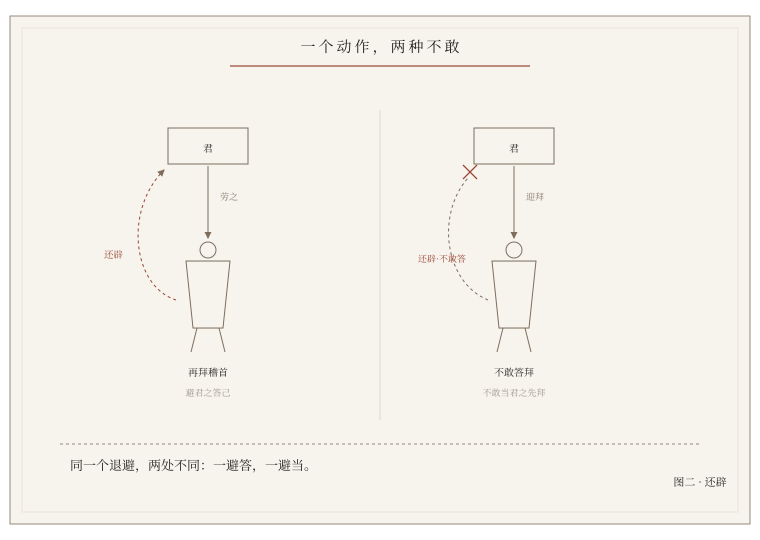

曲礼下 · 二·二十七 · 第 150 课
出聘他国的大夫、士见到该国国君：君若慰劳，则逡巡退避，再拜稽首；君若迎而先拜，则逡巡退避，不敢答拜。注「嫌与君亢宾主之礼」。
说什么事：大夫士见于国君，君若劳之，则还辟再拜稽首；君若迎拜，则还辟不敢答拜。
落在哪一层：礼。论使臣与主君之间「还辟」两次出现的分寸。
为何编在此位：上节说去国之苦，此节转说出使之仪。一出一入，皆在君与臣的分上。
【经】大夫士見於國君，君若勞之，則還辟，再拜稽首。君若迎拜，則還辟，不敢答拜。
【注】謂見君，既拜矣，而後見勞也。《聘禮》曰，君勞使者及介，君皆答拜。嫌與君亢賓主之禮。迎拜，謂君迎而先拜之。《聘禮》曰，大夫入門再拜，君拜其辱。
【疏】「大夫士见于国君」者，谓大夫士出聘他国君之礼。「君若劳之，则还辟，再拜稽首」者，劳，慰劳也。还辟，逡巡也。初至行聘享私觌礼毕，而主君又别慰劳己在道路之勤，故己逡巡而退者，辟君之答己之意也。……熊氏以为唯云「大夫士」，谓小聘大夫为宾、士为介故也。今谓大聘小聘皆然……此大夫之中则含卿也。「君若迎拜，则还辟，不敢答拜」者，君若迎，先拜宾，宾是使臣，不敢当礼，则还辟逡巡，不敢答主君之拜。
见于国君 疏「出聘他国君之礼」。所朝者非己君。
劳 慰劳。疏「慰劳己在道路之勤」。
还辟 还（音旋），逡巡。辟，避。退避盘旋，示不敢当。
再拜稽首 再拜而后稽首。稽首为拜之最重者。
迎拜 注「君迎而先拜之」。君先拜，是君行宾主之礼。
亢 注「嫌与君亢宾主之礼」。亢，敌也、抗也。宾不敢与君为对等之宾主。
大夫、士朝见他国国君：君若慰劳他，他就逡巡退避，再拜稽首。君若迎而先拜，他就逡巡退避，不敢答拜。
两句话，两个「还辟」，落点不同。前一处退避，是不敢受君之答拜；后一处退避，是不敢当君之先拜。同一个动作，两种不敢——礼的精密，就在同一个动作里安放了两种不同的分寸。
第一层 劳而后拜 注「既拜矣，而后见劳」：先已行过私觌之拜，君再慰劳，此时再拜稽首。拜不是客气，是对已受之礼的答。
第二层 还辟之义 逡巡而退，非拒君，是不敢让君答己。让与不让之间，礼取「不敢当」。
第三层 迎拜的难处 君迎而先拜，宾若答拜，则成宾主对等；若不拜，又似倨。礼的解法仍是还辟：以退避代答拜。
第四层 大夫含卿 疏辨「大夫之中则含卿」，经不言卿而卿在其中。礼文简，读者须以类相推。
与今日何干 受人之礼，退一步再接；受人先施之礼，也退一步而不即刻还——礼在往复之间留出余地，才不至于把恩义做成交易。
| 左 | 右 |
|---|---|
| 君若劳之 | 慰劳道路之勤 |
| 还辟再拜稽首 | 避君之答己 |
| 君若迎拜 | 君迎而先拜之 |
| 还辟不敢答拜 | 不敢当君之先拜 |
| 嫌与君亢宾主之礼 | 宾不敢与君为对等 |
| 大夫含卿 | 经文简，以类相推 |
画左右两段。左段：一人在下方作再拜之姿（只画背影与俯下的头肩），其上一道斜向箭头指向左上，箭头中途折返一小段（示还辟）；上方一枚方印形（示君位），印不画字。右段：同上位置一枚方印形，印下一道向下的短箭头指向人，人身后一道回折的弧（示退避不答）。两段之间一细竖线。不写文字。赊色只用在两处回折的折点上。
